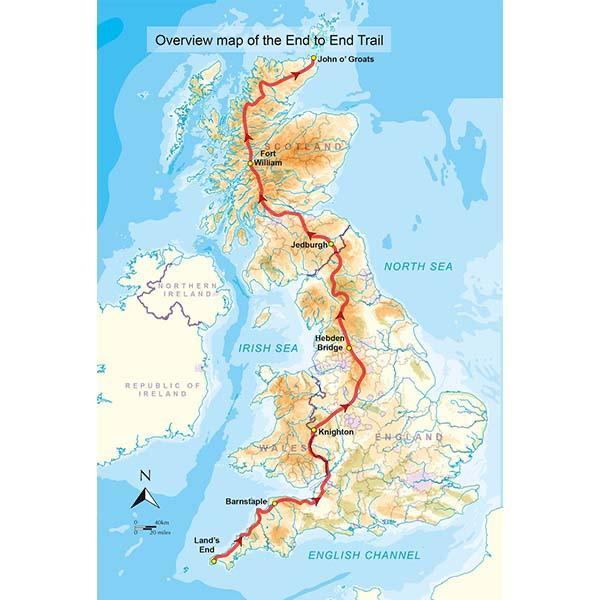

"SAVE THE GANGETIC DOLPHIN" is the project of Englishman and world traveller Luke Coleman. Passionate about the natural world, Luke, like many of us, is dismayed at the devastating destruction of nature we are seeing in our lifetimes. With a philosophy he terms "D.I.Y. environmentalism" he wanted to find a way that he could do his bit to help. He says, "As one little human, one can often feel powerless to change much, faced with such enormous problems, so I formed the thought to concentrate on one particular animal that I could get behind." Luke consulted a list of the world's endangered species but was overwhelmed with how many there were to choose from.
A few years later he made a pilgrimage to the all-creeds 'wish granting' Temple of Manukamana in Nepal and wished to be shown which animal he should devote his life's work to. Two days after that a mysterious 'hump' appeared out of a river he was crossing. When Luke learned that this seeing this 'hump' was in fact a sighting of a Gangetic dolphin he took it as a sign that this was the animal on which he should focus his efforts.
Following several more years of observation and research, Luke has learned that these truly are animals in dire need of saving or will without doubt be extinct within this century.
Luke believes that educating those that live in proximity to the river Ganges, along its banks, about the harm caused by pollution and raising awareness about the peril to the dolphins is critical to the conservation effort. In particular he believes that the future lies with the younger generation. It is his hope that if they be inspired to care about the problems caused by pollution and the plight of the dolphins, India's national aquatic animal, then they will hopefully grow up to want to change for the better how the river is currently being plundered and devastated.
To this end, Luke has written a children's story "The Adventures of Krishna The Gangetic Dolphin". It is the story of a young Gangetic dolphin and his human friend, a little boy called Aadesh. Krishna sets off on an adventure down the river to learn of the world. However he meets a vast wave of pollution and, though he tries to swim away and flee, he is engulfed by it and is poisoned and dies. While dead, he meets the Hindu god Shiva who tells him that he must return to life on Earth with the message that the river Ganges is being poisoned and need to be saved. In order to convey this message Shiva grants Krishna and Aadesh the power of communication by telepathy with one another. However before he can return Krishna must swim back through the pollution. This he achieves but thereafter he is a mystical, other-worldly and changed dolphin.
The book is currently in the process of being edited prior to publication and will eventually be available for sale. Proceeds will go towards having the book printed in India, where Luke plans to distribute it in schools along the banks of the Ganges. The more money he can raise, the copies he will be able to have printed. All Luke's travel and personal costs are self-funded so all money raised will go directly towards publication of the book.
This summer, along with his little dog Tuke, Luke is undertaking a 1300mile sponsored walk from John O'Groats to Landsend in the UK. If you would like to sponsor him in doing this, please use the DONATE link at the bottom of the page.
He is also on the lookout for others who would like to get involved in this project. Either undertaking a section of sponsored walk with him or with any other fundraising initiative. Also even travelling to India and assisting with distribution of the book in the future. If you think you can help in any way please use the contact form to get in touch.
Luke is hugely grateful for any support offered.
Thanks to Juliet for this website, Yassine for the logo and contact form and Wikipedia and the WWF for the factual information.